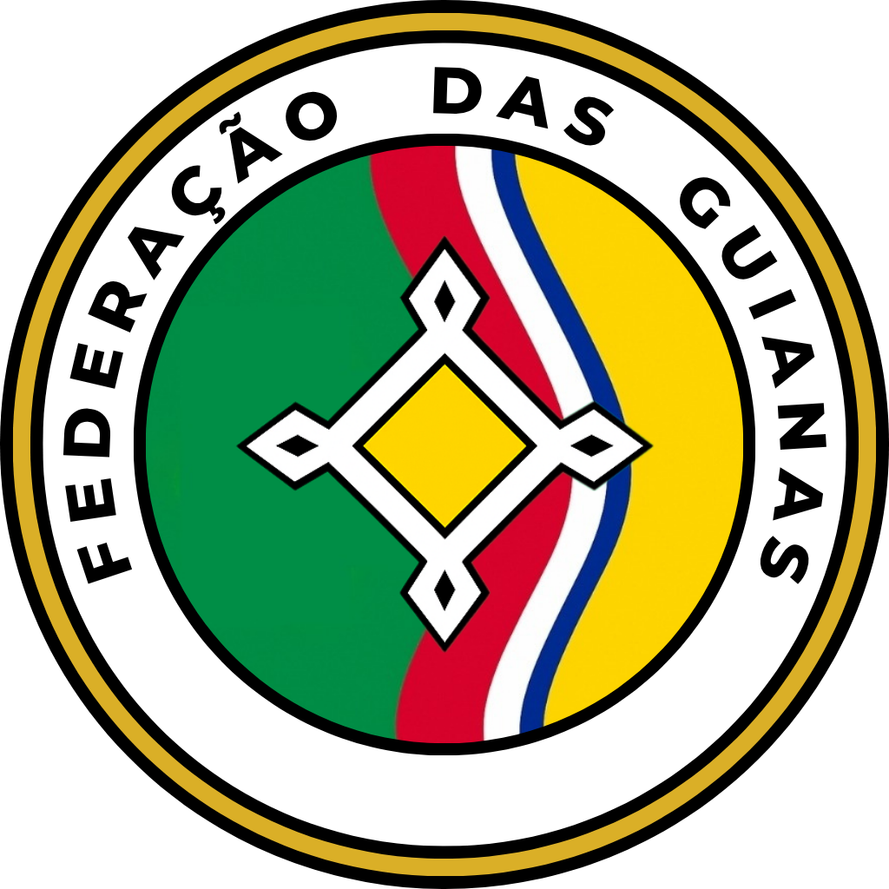

IDENTIDADE
Símbolos e Atos Oficiais
Documentação histórica e heráldica da União.
Lema Nacional
Unidades na União

Bandeira

Brasão

Selo Nacional

A Guilerma
Hino Nacional

Letra do Hino Nacional
Nas margens verdes do grande nascente,
Ergue-se firme a nossa nação.
De mil raizes, um so continente:
Pulsa um só povo, um só coração.
Unidades na União!
Vozes, cores, um só chão;
Guianas fortes, de mãos dadas,
Ecoando a mesma canção.
Por rios vivos e selva imensa,
Marchamos livres, em comunhão.
Sob a bandeira que nos condensa:
Coragem, história e construção.
Unidades na União! (Refrão)
Nossos caminhos, tão distintos,
Se entrelaçaram sem divisão.
E hoje brilham, plenos e extintos,
Os grilhões da separação.
Unidades na União! (Refrão)
Da terra-mãe vem nossa herança:
Do povo, a força e direção.
Do cêu, a paz e a esperança,
Que guia a federação.
Mireille Camará e Laurentino Bentez
Declaração de União (1932)

Transcrição do Ato
"Feita na Cidade de Upata aos dezoito dias do mês de julho do ano de mil novecentos e trinta e dois.
Nós, representantes legítimos dos povos da República das Águas, do Estasto Livre do Amazonas e da República de Bolívar e Delta, reunidos na cidade de Upata, conscientes da gravidade de nosso tempo e da responsabilidade perante as futuras gerações, proclamamos a união de nossos territórios sob a forma federativa, dando origem à Federação das Guianas.
Unimo-nos após décadas de construção nacional, resistência e busca por autodeterminação. Vimos nossos povos florescerem em liberdade durante o século XIX, enfrentando os desafios da independência e do reconhecimento internacional. Mas também vimos a sombra da guerra recair sobre nossas terras: a ocupação estrangeira, a divisão do Essequibo, o avanço hostil de interesses que não falavam por nossos povos.
Diante da agressão e do desrespeito, resistimos juntos. A República das Águas, nascida da união entre Suriname e Guiana, sustentou o legado de soberania popular frente à invasão. O Estado Livre do Amazonas, erguido das lutas do povo do interior venezuelano, rompeu com a tirania e clamou por autonomia. Bolívar e Delta, herdeiros de uma história de trabalho, sacrifício e dignidade, tomaram para si o destino comum de seus habitantes.
A guerra que nos foi imposta não destruiu nossa esperança - fortaleceu nossa aliança. Com a vitória conquistada em nome da liberdade, tornou-se inevitável que nossas bandeiras se encontrassem num mesmo horizonte. Assim, nesta data histórica, declaramos formada a Federação das Guianas: união politica e fraterna, fundada no princípio da soberania dos povos, no respeito à diversidade cultural e na cooperação solidária entre estados.
Comprometemo-nos a estabelecer uma Constituição comum que fundamente os direitos e deveres de todos os cidadãos guianeses. Comprometemo-nos com a justiça, com a paz e com o desenvolvimento sustentável de e nossas terras, rios, florestas e cidades. Comprometemo-nos, sobretudo, a nunca mais permitir que a divisão e o silêncio impeçam a voz dos nossos povos de se fazer ouvir.
Como sede provisória de nossas instituições federais, elegemos a cidade de Georgetown, símbolo de coexistência entre culturas, enquanto estudos futuros definirão, com base no consenso e na geografia, o local definitivo para abrigar nossa capital comum. Também reconhecemos como centros politicos e administrativos da Federação, neste momento de transição, as cidades de Paramaribo, Ciudad Bolívar e Puerto Ayacucho, que tanto contribuíram para esta união.
Esta Declaração, solenemente redgida e aprováda por delegações reconhecidas, será o marco inangural de nossa história comum. Que ela seja lembrada não apenas como um ato político, mas como um gesto de coragem, visão e fraternidade entre povos livres.
Em nome dos povos livres, pelos rios que nos unem, pelas gerações que virão."
Representante: Willem van der Meer (República das Águas)
Representante: José Antonio Fernández (República de Bolívar e Delta)
Representante: Miguel Ángel Ruiz (Estado Livre do Amazonas)
Redator: Teodoro V. Melguiso (Jurista)
Co-redator: Efraín Yaguarebo (Antropólogo)
Testemunha: Santiago Bermúdez (Prefeito de Upata)
Representante: José Antonio Fernández (República de Bolívar e Delta)
Representante: Miguel Ángel Ruiz (Estado Livre do Amazonas)
Redator: Teodoro V. Melguiso (Jurista)
Co-redator: Efraín Yaguarebo (Antropólogo)
Testemunha: Santiago Bermúdez (Prefeito de Upata)